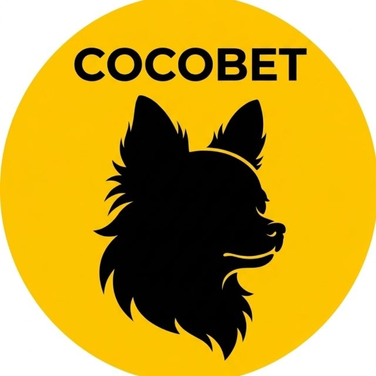

📸 Infografik für Social Media
1080×1920px (9:16) · Ideal für TikTok, Reels & Stories · Bild kopieren → in Telegram einfügen (⌘V)

Hier ist alles dokumentiert was unter der Haube passiert — jede Datenquelle, jede Logik, jeder Score. Kein Black Box. Du siehst exakt warum eine Wette empfohlen wird und was sie von Standard-Portalen unterscheidet.
Das wichtigste Signal im ganzen Tool — und das einzige das Standard-Wettportale schlicht nicht haben.
Ein Team mit noch 2 Spieltagen im Abstiegskampf spielt fundamental anders als dasselbe Team mit 10 Spieltagen. Dieses Tool berechnet das kontinuierlich — nicht binär, sondern mit einer graduierten Skala die jeden Markt beeinflusst.
Kein Bauchgefühl. Jede Wettempfehlung basiert auf echten Leistungsdaten: xG-Modell (API-Football: native xG Big-5, Shots-Proxy alle Ligen), Elo-Ratings, H2H-Statistiken, Formverläufe, Heim/Auswärts-Splits — alles kombiniert in einem kontinuierlichen Score-Modell.
Alle Daten kommen aus einer einzigen Quelle: API-Football Pro — kein Sofascore, kein Understat mehr (beide blockieren GitHub Actions IPs). Zusätzlich: historischer Backtest über 5 Ligen × 2 Saisons zur Kalibrierung der Schwellenwerte.
Jedes Spiel hat eine Opening-Quote (erste Beobachtung, eingefroren) und eine aktuelle Quote (alle 3h aktualisiert). Die Differenz zeigt wo professionelle Wetter ihr Geld hinschicken.
Quoten fallen von 2.20 auf 1.85? Das ist SHARP Money — institutionelles Kapital das den Preis drückt. CocoBet erkennt das automatisch und markiert es farblich auf jeder Card: Grün wenn es unseren Pick bestätigt, Rot wenn es ihm widerspricht.
| Quelle | Was geliefert wird | Script / Trigger | Verwendet für |
|---|---|---|---|
| API-Football Pro ($19/Mo · 7.500 req/Tag) | Standings · Fixtures · Form (last 10) · Schiedsrichter · Verletzungen/Sperren · Echtes H2H · Pinnacle-Quoten · Fixture-Statistics (Shots + xG) · Predictions (expected goals · Over/Under · Poisson %) | update_dashboard.py täglich · refresh_stats.py täglich · refresh_xg.py wöchentlich · prematch-server.js täglich |
Alle Daten — einzige externe Quelle: Tabellen, Picks, xG, Pre-Match, Quoten |
| 📐 refresh_xg.py — xG aus Fixture-Statistics | Pro Liga: letzte ~50 FT-Spiele → /fixtures/statistics?fixture=ID → Shots-on-Goal × 0.32 Proxy (alle Ligen) oder native Expected Goals (Big-5) |
refresh_xg.py — GitHub Actions, jeden Montag 05:00 UTC |
xG_home · xGA_home · xG_away · xGA_away · xg_fairness (actual_goals / xG) pro Team → activiert xGBased=true im Dashboard |
| 📊 refresh_stats.py — Tore-Proxy + Elo + CS/FTS | Alle FT-Fixtures der Saison → Tore/Spiel pro Team (home/away split) · homeWinRate · awayWinRate · cleanSheetHome/Away · failedToScoreHome/Away | refresh_stats.py — täglich 05:45 UTC · ClubElo-Elo täglich |
homeWinRate · awayWinRate · Elo-Rating · cleanSheet- & failedToScore-Raten → BTTS, Under, Over Kalibrierung |
| ClubElo | Elo-Rating pro Team (täglich aktualisiert, öffentlich) | refresh_stats.py |
Qualitätsgefälle zwischen Teams · Elo-Label im Dashboard · Heimsieg/Auswärtssieg-Boost |
| H2H (API-Football) | Direkte Duelle: Siege/Remis, Over-2.5-Rate, BTTS-Rate, Ø Tore/Spiel, letzte 5 Ergebnisse (W/D/L) mit Recency-Gewichtung | prematch-server.js — täglich, sequenziell mit 1.2s Delay |
H2H-Tormodifier für Over/Under- und BTTS-Picks · Recency-Modifier Ergebnis-Picks (±0.07) |
| Formverlauf (API-Football) | Letzte 10 Spiele: Ergebnisse, Siege, Tore — via /fixtures?team=ID&last=10 |
update_dashboard.py |
homeInForm/awayInForm-Flags · Streak-Bonus/-Malus · formScore |
| The Odds API (primär für Spezial-Märkte) | 6 Fetch-Passes (client-side): Pass 1 H2H + OU2.5 + Spreads · Pass 2 BTTS · Pass 3 Corners + Cards + DC · Pass 4a/b HZ-H2H + HZ-Totals + HZ-BTTS · Pass 5 Team Goals · Pass 6 Asian O/U + AH Multi-Line — gecacht 2h · 11 Ligen | Browser (client-side) — loadAllOdds() |
Primär für Spezial-Märkte (BTTS, HT Over, Corners, Cards, Team Goals, Asian O/U, AH Lines) die api-football nicht liefert oder die CORS-blockiert wären · Supplement für fehlende Spezial-Märkte wenn Hauptquoten aus prematch-data.json kommen |
| Backtest-CSVs (football-data.co.uk) | 5 Ligen × 2 Saisons historische Spiele mit xG, Halbzeittore, Schüsse | Einmalig lokal | Kalibrierung aller Schwellenwerte · Marktkalibrierung |
1,5 Sekunden nach dem Page-Load lädt loadPreMatchData() im Hintergrund echte Spieldaten — nur für Tage mit konfigurierten Spielen, bis zu 30 Tage im Voraus.
/injuries?fixture=ID/fixtures/headtohead?h2h=ID-ID&last=10Budget: ~70–100 API-Requests/Tag von 7.500 verfügbaren → <1.5%
Karten-Picks werden jetzt schiedsrichterbasiert skaliert:
| Ø Karten/Sp | Modifier | Effekt |
|---|---|---|
| ≥ 5.5 | +0.18 | Starker Boost |
| 4.5–5.4 | +0.10 | Boost |
| 3.5–4.4 | +0.04 | Leichter Boost |
| < 2.0 | −0.20 | Pick komplett unterdrückt |
| < 2.8 | −0.12 | Stark gedämpft |
Kein Daten → neutral (0). Lenient Ref + nicht extremes Druckspiel → Karten-Pick wird entfernt.
Echte Spieler-Ausfälle aus der API mit positionsspezifischen xG-Impacts:
| Position | Ausfall → Angriff | Ausfall → Abwehr |
|---|---|---|
| ⛔ Torwart | − | +9% xGA/Ausfall |
| 🛡️ Abwehr | − | +7% xGA/Ausfall |
| ⚽ Sturm | −10% xG/Ausfall | − |
| 🔄 Mittelfeld | −4% xG/Ausfall | − |
Alle Impacts gekappt bei max −25% xG / +25% xGA. Fließt in homeAttStr / awayAttStr / homeDefStr / awayDefStr ein → beeinflusst alle Tore- und Ergebnis-Picks direkt.
🏥 Injury Edge Badge: Wenn impactScore ≥ 2.0 UND Edge ≥ 5% (statt 7%) → Pick erhält Injury-Edge-Markierung.
Drei unabhängige H2H-Signale kombiniert:
① Over-2.5-Rate → Over/Under-Modifier:
| H2H Over-2.5-Rate | Modifier |
|---|---|
| ≥ 70% | +0.12 |
| 60–69% | +0.06 |
| ≤ 20% | −0.14 |
| ≤ 30% | −0.08 |
② Ø Tore/Spiel → unabhängige Bestätigung:
| Ø Tore/Spiel | Modifier |
|---|---|
| ≥ 3.5 | +0.05 |
| 3.0–3.4 | +0.03 |
| ≤ 1.6 | −0.05 |
| ≤ 2.0 | −0.03 |
③ Letzte 5 Ergebnisse (W/D/L) → Recency-Modifier auf Ergebnis-Picks:
Jüngste Meetings zählen mehr (Gewichte 10/15/25/25/25%). Max ±0.07 auf Heimsieg/Auswärtssieg-Score. Wenn das Team zuletzt dominiert hat, steigt die Konfidenz — unabhängig vom Gesamtverlauf.
BTTS-Rate beeinflusst analog den BTTS-Pick (±0.05–0.16). Alles nur bei ≥5 H2H-Spielen aktiv (≥3 für Win/Draw-Rates).
Grundregel: Wir versuchen nicht, Pinnacle zu schlagen. Pinnacle (der schärfste Buchmacher) ist der Anker. Unsere 15 Signale sind Modifikatoren obendrauf — jedes liefert einen Score, eine Confidence und einen Klartext-Beleg.
sharp_signals/*.py) — an/abschaltbar, einzeln testbarsignal_weights.json): ein Signal, das historisch öfter recht hat, zählt mehrLiga-fähig: derselbe Signal-Stack läuft per Config-Profil auch für Top-Ligen + Champions League.
| Familie | Signale |
|---|---|
| 📈 Sharp-Money | Lead-Lag (Pinnacle vs Soft-Konsens) · Steam-Lag (Trade-Seite) |
| 📊 Form | Form-Trend · xG-Stärke · H2H · Chancen-Kreation · Form-Rating |
| 🌍 Kontext | Reise-Last (Base-Camp↔Stadion) · Aufstellung · Saisondruck · Wetter · Höhe |
| 👥 Public | Soft-Book-Konsens-Bias |
| 🎲 Anreiz | Incentive (Bracket/Qualifikation) |
| 🎯 Unique | Aufstellung (T-1h) · APIF-Predictions |
„Unique" = orthogonal zu allem anderen → volle Gewichtung, kein Anti-Korr-Discount.
Stand WM-Start: 8 von 15 Signalen feuern, 180 von 187 Picks haben mindestens ein aktives Signal.
| Signal | Picks |
|---|---|
| Form-Trend | 142 |
| xG-Stärke | 129 |
| Reise-Last | 100 |
| Saisondruck | 39 |
| Wetter (Hitze) | 35 |
| APIF-Predictions | 15 |
| H2H-Muster | 12 |
| Höhe | 7 |
Die übrigen 7 sind nicht kaputt — sie warten auf ihren Auslöser: Lead-Lag/Steam/Polymarket brauchen Quotenbewegung über die Zeit, Public-Bias schaltet mit dem neuen Konsens zu, Aufstellung feuert erst T-1h, Incentive ab K.o.-Bracket, Verletzungen sind vor Turnierstart dünn. Echtes Volumen kommt mit Top-Ligen + Champions League.
Ein Pick kann Trading-Edge haben (lohnt sich auf Polymarket) — und trotzdem keine gute Wett-Empfehlung sein, und umgekehrt. Der Conviction-Score (0–10) bewertet die Wett-Qualität getrennt vom reinen Edge.
So fliegt ein dünner +1pp-Trade nicht als „Top-Wette" auf die Karte, nur weil die Edge-Mathematik knapp positiv ist.
| Familie | Max | Was zählt |
|---|---|---|
| Sharp-Money | 3 | Pinnacle-Move + Soft-Lag |
| Modell-Stack | 3 | Form · xG · H2H · Injury · Sanity |
| Kontext | 3 | Reise · Aufstellung · Wetter · Druck · Anreiz |
| Markt | 1 | Public-Bias + APIF |
Höher gewichtet ist Sharp-Money — echter Edge-Beweis. Die Bayesian-Signal-Gewichte justieren die Beiträge datengetrieben mit.
| Score | Verdict |
|---|---|
| ≥ 8 | 🎯 Top-Wette |
| ≥ 6 | ⭐ Gute Wette |
| ≥ 4 | 👁 Beobachten |
| < 4 | kein Card-Pick |
Ein „Abwägen"-Pick wird zur BET hochgestuft, wenn die Conviction ≥ 8 erreicht. Und weil der Bayesian-Loop die Gewichte nach jedem Resultat nachzieht, kalibriert sich diese Schwelle über die Zeit selbst.
Der _pressureBoost wird granular berechnet — nicht binär:
Der Boost fließt in jeden Pick-Typ ein:
Der Match Score basiert primär auf dem pressureRatio. Das Modell berechnet wie viele Punkte ein Team noch braucht — konkurrenz-adjustiert: statt den aktuellen Punktestand des Konkurrenten einzufrieren, wird dessen projiziertes Endresultat (via PPG) berücksichtigt. Zusätzlich gilt ein Torverhältnis-Tiebreaker bei Punktegleichstand.
pointsNeeded = (pts_boundary + comp_gain) − pts + 1 [+ GD-Penalty]
comp_gain = roundsLeft × PPG_competitor (PPG aus aktuellem Tabellenstand, geclampt 0.8–2.4). GD-Penalty +1 wenn Punktegleichstand aber schlechteres Torverhältnis. pressureRatio = min(1.0, pointsNeeded / max_gain)
Beispiel: Abstiegsteam 4 Punkte hinter Sicherheit, sicheres Team PPG 1.5, 4 Runden → comp_gain ≈ 6 → pointsNeeded = 4+6+1 = 11, ratio = 11/12 = 0.92 → mustWin. Alt: pointsNeeded = 5, ratio = 0.42 → kein Druck.
pressureRatio > 0.65 — Team muss fast jeden Punkt gewinnen. Match Score +0.4 (ein mustWin) oder +0.8 (beide mustWin). Stärkster Einzel-Boost im System.
pressureRatio < 0.30 — Team kann sich ein Remis leisten. Mäßigt Over-Picks, stärkt Draw-Wahrscheinlichkeit minimal.
| pressureRatio | Interpretation | mustWin (nur bei motiv=full) | canDraw | Score-Effekt |
|---|---|---|---|---|
| > 0.65 | Existenzkampf — muss nahezu jeden Punkt gewinnen | ✅ ja (wenn motiv=full) | — | +0.4 (einer) / +0.8 (beide) |
| 0.30–0.65 | Mittlerer Druck — jeder Punkt wichtig aber kein Muss | — | — | pressure_score = ratio × 3.5 |
| < 0.30 | Komfortzone — kann Remis akzeptieren | — | ✅ ja | Dämpft Under/Draw leicht |
| 0 + motiv='low' | Praktisch erledigt — kein echter Kampfwille mehr | — unterdrückt | — | −0.3 (einer low) / −0.6 (beide low) |
| 0 + motiv='none' | Mathematisch bestätigt (Abstieg/Titel gesichert) | — unterdrückt | — | −1.0 (einer none) / −2.0 (beide none) |
Berechnung: update_dashboard.py → calc_pressure() → gespeichert in homeStake.pressureRatio / mustWin / canDraw / pointsNeeded → computeMatchScore() in JS liest diese Flags direkt.
Teams deren Saisonfate mathematisch besiegelt ist (Abstieg bestätigt, Meister gekrönt, Europa-Platz gesichert) haben null Anreiz für Vollgas — sie rotieren Stammspieler und senken die Intensität.
| Level | Bedeutung | Bedingung | xG-Effekt | Score-Effekt |
|---|---|---|---|---|
full | Aktiv kämpfend | Standard — Ziel noch offen | Kein Penalty | — |
low | Praktisch entschieden | Abstieg: (Rückstand + comp_gain) > 75% der Max-Punkte ODER bereits über der Sicherheitslinie (label residual) · Titelrennen/UCL: (Vorsprung − comp_gain) > 15% der Max-Punkte · comp_gain = PPG_Konkurrent × roundsLeft (geclampt 0.8–2.4) | Att −8% · Def +6% | −0.3 (einer low) · −0.6 (beide low) |
none | Mathematisch bestätigt | Rückstand (roh) > max_gain ODER konkurrenz-adjustiert: (Rückstand + comp_gain) ≥ max_gain — auch wenn rein mathematisch noch möglich, aber der Konkurrent gewinnt realistischerweise genug Punkte um unerreichbar zu bleiben | Att −18% · Def +12% | −1.0 (einer none) · −2.0 (beide none) |
Berechnung: update_dashboard.py → calc_motivation() · Wird in homeStake.motivationLevel / awayStake.motivationLevel gespeichert · mustWin wird jetzt für low UND none unterdrückt — nur full-Teams spielen mit echter Muss-gewinnen-Intensität.
Jedes Team bekommt ein Label basierend auf Tabellenposition und Abstand zu kritischen Plätzen. Diese Labels lösen den Druckfaktor aus:
| Label | Bedeutung | Trigger-Bedingung (aus calc_labels()) | Druck-Effekt |
|---|---|---|---|
| 🏆 GOLD | Titelrennen | Titelkampf: Position 1 · Titelchance: Position ≤ 3 UND Abstand zum Ersten ≤ 6 Punkte | Heimsieg/Auswärtssieg +Boost; Leader: canDraw wenn gesichert |
| 🔵 BLAU | Champions League | UCL sichern: Position ≤ UCL-Plätze UND Vorsprung auf Verfolger ≤ 3 Punkte · UCL Jagd: Position > UCL-Plätze UND Rückstand auf UCL-Letzten ≤ 4 Punkte | Moderater Druck, UCL-Platz ist Millionenspiel |
| 🟠 ORANGE | Europa League | EL sichern: In EL-Zone UND Abstand zur Grenze ≤ 3 Punkte · EL Jagd: Außerhalb EL-Zone UND Rückstand auf EL-Letzten ≤ 3 Punkte | Leichter Druck |
| 🟡 GELB | Rel.-Playoff | In der Playoff-Zone (Liga-spezifisch): zwischen letztem sicheren Platz und echtem Abstiegszone — bekommt Playoff + Abstiegsgefahr-Label | Erhöhter Druck — ein Spiel entscheidet über Verbleib |
| 🔴 ROT | Abstiegskampf | Abstieg: Position ≥ erster Abstiegsplatz (liga-spezifisch) · Abstiegsgefahr: Rückstand auf sicheren Platz ≤ 6 Punkte UND Position ≤ 2 über Sicherheitszone · Achtung: Label basiert auf aktueller Position — motivationLevel zeigt ob mathematisch noch möglich | Stärkster Boost — Existenzangst treibt maximalen Angriffsdruck |
Der Ergebnis-Markt. Kandidaten werden alle gescort und der beste Passende ausgewählt:
_pickBestLine(ah_lines, 1.62) wählt die AH-Line mit Quote am nächsten bei ~1.62 aus allen alternate_spreads-Lines (Pass 6). Fallback auf Standard-AH-Line aus spreads (Pass 1).Mindestquoten-Filter: sc < 0.73 (impliziert Quote ≥ 1.37) oder reale Odds ≥ 1.30 nötig.
xG-basierter Tormarkt, drucksensitiv:
alternate_totals (Pass 6) — z.B. Over 2.25 statt Over 2.5Consistency-Guard: defensiver Sieger dämpft Over-Märkte graduell.
🔗 H2H-Modifier (API-Pro): Wenn ≥5 Duelle vorliegen, verschiebt die echte Über-2.5-Rate (±0.06–0.14) und BTTS-Rate (±0.05–0.16) die Model-Probability für Over/Under- und BTTS-Picks direkt.
Differenzierungsmarkt — nie überschneidend mit Pick 1+2:
🃏 Schiedsrichter-Modifier (API-Pro): Ø Karten/Sp der letzten 8 Spiele des Schiedsrichters → Karten-Picks +0.04 bis +0.18 (strenger SR) oder −0.05 bis −0.20 (laxer SR). Gecacht 48h.
Jeder Pick bekommt einen kontinuierlichen Score (0–1+) der aus allen Signalen zusammengesetzt wird. Daraus entsteht das Konfidenz-Level:
| Level | Anzeige | PICK 1 Schwelle (Heimsieg) | Backtest-Trefferquote |
|---|---|---|---|
| ★★★ HIGH | Grüner Rahmen | sc > 1.50 | ~68–72% (kalibriert) |
| ★★☆ MEDIUM | Gelber Rahmen | sc > 0.50 | ~55–62% |
| ★☆☆ LOW | Nicht angezeigt | sc ≤ 0.50 | ~47% (unterdrückt) |
Low-Confidence Picks werden grundsätzlich nicht angezeigt — Backtest zeigte 47.6% Trefferquote, kaum besser als Zufall.
Für Picks mit echten Pinnacle-Odds wird der Edge berechnet:
Edge = Modell-Prob − (1/Odds × 1.03)
Der Faktor ×1.03 zieht die ~3% Buchmaker-Marge (Vig) aus der Implied-Prob heraus, bevor wir den Edge berechnen. Ohne diesen Korrekturfaktor würde jede Edge ~3 Prozentpunkte zu hoch erscheinen und zu viele Picks als "value" markiert. Pinnacle-Quoten kommen primär aus api-football Pro (alle Bookmaker inklusive Pinnacle-ID 8). Fallback: the-odds-api.com (11 Ligen, 6h gecacht).
Druck erhöht die Model-Prob für Over/Under → Value-Badge erscheint häufiger bei Druckspielen. H2H-Modifiers fließen ebenfalls in die Model-Prob ein.
Statt einer einzelnen Pinnacle-Quote werden alle verfügbaren Bookmaker genutzt um eine gewichtete, fehlerfreie Wahrscheinlichkeit zu berechnen:
| Schritt | Aktion |
|---|---|
| ① Sammeln | Alle Bookmaker-1X2 aus API-Football — kein Filter |
| ② Margin-Check | Skip wenn Marge >15% (korrupt) oder <−2% (Exchange-Arbitrage) |
| ③ De-Vig | 1X2 → implizierte Wahrscheinlichkeiten, normalisiert auf 100% |
| ④ Gewichten | Pinnacle (ID 8) = 2× Gewicht · alle anderen = 1× |
| ⑤ Ergebnis | hw_fair / dr_fair / aw_fair = fairer Preis ohne Bookmaker-Bias |
deriveOdds() nutzt hw_fair/dr_fair/aw_fair wenn verfügbar — daraus werden DNB + DC-Quoten berechnet. Fallback: Single-Source-Devig (Pinnacle allein). Anzahl beitragender Bücher: r._cn.
Jede Fixture speichert beim ersten Fetch ihre Opening-Quote (odds_open) — eingefroren, nie überschrieben. Die odds aktualisieren sich alle 3h. Der Unterschied ist das Signal:
| ppShift | Bedeutung | Darstellung |
|---|---|---|
| < 3pp | Rauschen — kein Strip angezeigt | — |
| 3–5pp | Leichte Bewegung | ↘ / ↗ grau |
| 5–8pp | Moderate Bewegung | ⬇ / ⬆ farbig |
| ≥ 8pp | Starke Bewegung — SHARP | ⬇⬇ + Badge |
■ Grün: Bewegung bestätigt unseren Pick | ■ Rot: Bewegung widerspricht unserem Pick | ■ Blau: Geld kommt rein, kein Pick auf dieser Seite | ■ Grau: Drift / kein Signal
Strip erscheint nur wenn ≥1 Outcome ≥3pp bewegt hat. Kein Clutter bei stabilen Linien.
Alle Spezial-Märkte werden in separaten Passes nach dem Haupt-Fetch per Event-ID gemergt:
cards_o35/o45/o55) + Double Chancehto15/ato15)ao_lines/au_lines) + AH alle verfügbaren Lines (ah_home_lines/ah_away_lines) via alternate_totals + alternate_spreadsAlle Passes mergen nur fehlende Felder — vorhandene Quoten werden nicht überschrieben. Resultat: alle Picks haben echte Bookie-Quoten; Asian-Picks nutzen automatisch die Line mit der besten Quote (~1.62).
Verhindert das häufigste Selbstwiderspruch-Problem: Over 2.5 empfehlen obwohl das Modell nur 2.2 Tore erwartet.
if (expGoals < 2.5) → kein Over 2.5 Pick — kein Override möglichBacktest über 5 Ligen × 2 Saisons (football-data.co.uk CSVs) mit Rolling-Stats Methodik (kein Look-Ahead). Ergebnisse haben die Schwellenwerte kalibriert:
| Markt | Gefundene Trefferquote | Angepasste Schwelle | Konsequenz |
|---|---|---|---|
| Heimsieg ★★★ | ~68% bei hohem sc | sc > 1.50 (war 1.20) | Strenger — nur wirklich multi-signal Picks |
| Auswärtssieg ★★★ | ~72%, +2.7% ROI | sc > 1.30 | Bestes Signal im gesamten Tool |
| Heimsieg Basis | Zu oft gefeuert | Base 0.0 (war 0.40) | Positive Signale müssen Score aktiv aufbauen |
| HZ Over 0.5 | 76% bei expGoals > 3.0 | Threshold 3.4 (Quote-Filter), 3.1 bei Druck | Nur bei echter Odds-Value |
| Team Over 1.5 Heim | 69% bei expHome > 1.85 | expHome > 1.85/1.95/2.10 | Drei Tiers je Stärke |
| Team trifft Over 0.5 | 92% — entfernt | — | Marktquote ~1.08 → kein Value |
Alle 11 Ligen via API-Football Pro (ID: APISPORTS_KEY in GitHub Secrets). xG-Status hängt vom wöchentlichen refresh_xg.py ab:
🇧🇪🇵🇱🇭🇺🇭🇷 Neue Ligen (Apr 2026): BEL (Jupiler Pro League, ID 144), POL (Ekstraklasa, ID 106), HUN (NB I, ID 271), CRO (HNL, ID 210). Alle mit Shots-Proxy xG. lgCap: BEL +0.02, POL/CRO/HUN ±0. BEL hat Championship-Playoffs (Top 6 spielen 10 Extra-Runden) → rounds=40 konfiguriert.
Wenn refresh_xg.py noch nie gelaufen ist: xGBased = false → Dashboard fällt auf Goals-Proxy (Tore/Spiel aus refresh_stats.py) zurück. Anzeige: "Ø X.X EG" statt "📐 X.X xG".
motivationLevel: 'full' | 'low' | 'none'. Gesicherte Teams: Attack −18% xG, Defense +12% xGA. Match Score −1.0 (einer none) / −2.0 (beide none).ip = (1/odds) × 1.03: ~3% Vig wird aus der Implied-Prob rausgerechnet bevor Edge berechnet wird. Verhindert systematisches Überschätzen von Edges. Gilt auch für das "Fair Odds"-Chip in den Cards._formMod() hat jetzt drei Pfade: red (±0.5–2.0), isStake/gold/blue/orange/lila (±0.3–1.2), default (±0.3–0.5). Gold/Blue/Orange/Lila-Teams fließen nun mit deutlich stärkerem Formgewicht in den Match Score ein._lgCap Lookup-Tabelle pro leagueKey: ENG/GER +0.05 (torreich), ITA/FRA −0.04 (defensiv), andere dazwischen. Beeinflusst O2.5, U2.5, O3.5 proportional. Harte Grenzen: 0.05–0.92.pointsNeeded = (pts_boundary + comp_gain) − pts + 1 [+ GD-Penalty]. comp_gain = PPG des Grenztabellen-Teams × roundsLeft (geclampt 0.8–2.4 PPG). Verhindert dass ein Team als sicher gilt, wenn der Konkurrent noch 6–8 Punkte dazugewinnt. GD-Penalty +1 wenn Punktegleichstand aber schlechteres Torverhältnis — weil das Team dann tatsächlich einen Platz hinter dem Konkurrenten liegt. (update_dashboard.py)refresh_stats.py berechnet jetzt aus dem bestehenden Fixture-Loop pro Team: cleanSheetHome, cleanSheetAway, failedToScoreHome, failedToScoreAway (0.0–1.0, Saisonbasis, keine neuen API-Calls nötig). Fließt in BTTS Nein (+0.12–0.26 Bonus), BTTS Ja (−0.10–0.18 Dämpfer), Under 2.5 (+0.05–0.10 Boost), Over 2.5 (−0.10 wenn sehr defensiv) und Begründungstexte ein. (refresh_stats.py + season-finish.html)prematch-server.js Step 5.5 holt /predictions?fixture= für jedes Spiel: goalsHome, goalsAway, underOver ("Over 2.5" / "Under 2.5"), pctHome/Draw/Away sowie poissonHome/Draw/Away. Wird ins apiPrediction-Objekt auf dem Match gespeichert. (prematch-server.js)xGBased=false (kein Understat-xG) und API-Goals verfügbar: expGoals = 0.70 × Modell + 0.30 × API-Prediction-Goals. Ergebnislabel zeigt "🤖 EG (Modell + API)" statt "Ø EG". Für Big-5 mit echtem xG kein Blend — dort ist die Datenbasis bereits stark. (season-finish.html)apiPrediction.underOver verstärkt das eigene Modell wenn beide übereinstimmen (Over: +0.07, Under: +0.07) und dämpft wenn sie divergieren (−0.06). Verhindert Over-Empfehlungen wenn das API-Modell "Under" sieht und umgekehrt. (season-finish.html)poissonHome/Away (0–100%) wird als milde Korrekturgröße für Heimsieg/Auswärtssieg-Score eingesetzt wenn keine Pinnacle-Quoten vorliegen (max ±0.10). Ist Pinnacle vorhanden, bleibt de-viggte Marktquote primär. Poisson-Werte erscheinen als "🤖 API-Modell: X% Heim · Y% Remis · Z% Auswärts" in Begründungstexten. (season-finish.html)prematch-server.js Step 5.5 extrahiert jetzt auch comparison.form, comparison.att, comparison.def, comparison.goals (je {home: 0–100, away: 0–100}) ins apiPrediction-Objekt. In getBettingPicks() werden Differentials berechnet (_compFormDiff, _compAttDiff, _compDefDiff, _compGoalsDiff) und als schwache Score-Korrekturgröße (+max 0.07 Heim, inversiert für Auswärts) in Heimsieg- und Auswärtssieg-Scoring eingebaut. (prematch-server.js + season-finish.html)pctHome/Draw/Away) gemischt. Das Ergebnis (_fairPH, _fairPD, _fairPA) wird überall dort verwendet wo bisher _bkrPH/D/A stand: Draw-Unterdrückung, mp-Berechnung für Heimsieg/Auswärtssieg/Unentschieden. Wenn nur eine der Quellen vorhanden: wird diese alleine genutzt. (season-finish.html)refresh_stats.py holt via GET /teams/statistics (nach dem Fixture-Loop, 1 API-Call pro Team) die häufigste Aufstellung der Saison und speichert sie als formation (z.B. "4-3-3"). In getBettingPicks() wird die Anzahl der Stürmer (letzte Zahl) ausgelesen: ≥3 Stürmer = offensiv (+7% Angriff, −3,5% Verteidigung), ≤1 Stürmer = defensiv (−7% Angriff, +3,5% Verteidigung). Angewendet nach Fatigue/Injury/Motivation-Penalties auf homeAttStr/awayAttStr. Formation wird auch in Begründungstexten ("📋 Formation: 4-3-3 vs 4-5-1") angezeigt. (refresh_stats.py + season-finish.html)refresh_stats.py berechnet aus den Fixture-Timestamps (ohne neue API-Calls) den currentStreak (+N = N Spiele in Folge ungeschlagen/gewonnen, −N = N Spiele in Folge ohne Sieg). Außerdem werden via GET /teams/statistics die saisonbesten Streaks gespeichert: biggestWinStreak, biggestLoseStreak, biggestDrawStreak. In getBettingPicks() fließen diese in Heimsieg- und Auswärtssieg-Scoring ein: BigWinStreak ≥5 = dominantes Team (+max 0.08), aktueller Lauf ≥3 = momentum (+max 0.08). Streak ≥3 erscheint auch als "🔥 Aktueller Lauf: X× ungeschlagen" in Begründungstexten. (refresh_stats.py + season-finish.html)GET /teams/statistics (bereits für Formation/Streaks gecalled) liefert auch shots.home.total, shots.home.on etc. → xG wird jetzt aus Schüssen berechnet: SoT/Spiel × 0.35 + (Schüsse − SoT)/Spiel × 0.055. Das ist deutlich genauer als Tore/Spiel als xG-Proxy — vor allem für TUR/NED/POR/SCO etc. wo kein Understat vorliegt. Das verbesserte xG setzt xGBased=true und erscheint als "🎯 X.X xG (Schüsse)" in Begründungstexten. Null zusätzliche API-Calls gegenüber dem bisherigen Stand. (refresh_stats.py + season-finish.html)refresh_stats.py fetcht via GET /fixtures/statistics?fixture= für die letzten 25 Spiele pro Liga die Spielstatistiken (Corner Kicks). Pro Team wird der Schnitt der Heimecken (cornersHome) und Auswärtsecken (cornersAway) gespeichert. In getBettingPicks() ersetzt die echte Summe aus Home+Away-Schnitt die Formel-Schätzung (homeAttStr × 3.4 + ...). Neue Corner-Picks in Pick 3: Über 8.5/9.5/10.5/11.5 Ecken mit dynamischer Marktlinie basierend auf echtem Schnitt, und neu Unter 8.5/9.5 Ecken für defensiv geprägte Spiele. Corner-Quoten aus parseBets (co85/co95/co105/co115/cu85/cu95) werden für Value-Check verwendet. Das Label "📊 Echte Ecken-Daten (Saison): X Heim · Y Ausw." erscheint in Begründungstexten wenn echte Daten vorliegen. Ohne echte Daten: Formel-Fallback. --fast-Flag überspringt den Fixture-Stats-Fetch. (refresh_stats.py + prematch-server.js + season-finish.html)mustWin=True behandelt wenn pressureRatio > 0.65. Neu: Early-Return in calc_pressure() für solche Teams → mustWin=False, pressureRatio=0. Gleiches Guard in JS. Verhindert Scores wie 10.3/12 und falsche "Abstiegskampf"-Narrative für bereits abgestiegene Teams. (update_dashboard.py + season-finish.html)calc_match_score() hatte keine rounds_left-basierte Score-Obergrenze. Jetzt identisch mit JS: rl=1→12.0, rl≤6→9.5, rl≤7→9.0, rl≥10→7.5. Red-Safe-Erkennung: Teams mit rotem Label aber pressure=0 und ptNeeded=0 (mathematisch gerettet) erhalten reduzierten Drama-Bonus statt vollem. Neue Signatur: calc_match_score(home_stake, away_stake, h2h, rounds_left). (update_dashboard.py)computeMatchScore() in der HTML wendet jetzt dieselbe red-safe-Logik an wie Python: bothRed && bothRedSafe → +0.2 (statt vollem Drama-Bonus); anyGold && anyRed && anyRedSafe → reduzierte Formel; anyRed && anyRedSafe && bothStakes → +0.15. Verhindert überhöhte Scores wenn ein Team zwar rot-labelled aber bereits gerettet ist. (season-finish.html)bothRed && bothRedSafe → "⬜ Abstiegszone erledigt" statt Drama-Text; (2) anyGold && anyRed && anyRedSafe → "🏆 Klassenunterschied" (kein Underdogalarm); (3) anyGold && anyRed && h2hDominated → "🔥 Klasse dominiert H2H"; (4) anyRed && anyRedSafe → "🟡 Abstiegszone" (neutral, kein Panik-Text); (5) anyRed && h2hDominated → "🔴 Abstiegsdruck+H2H" (realistischer); (6) gold-secured: gold-Team mit pressure=0/ptNeeded=0 → "🏆 Pflichtaufgabe/Dominanztest"; (7) bothOrange → "🟠 Europa-Duell" statt generischem "⭐ High Stakes"; (8) "BTTS realistisch" in Drama-Text entfernt → "Intensive, offene Partie" (war irreführend bei low-gpg Teams). (season-finish.html)season-finish.html liest und alle bevorstehenden Fixtures (21 Tage voraus) auf 13 Logik-Muster prüft. Drei Schweregrade: 🔴 FEHLER (z.B. MW_ON_CONFIRMED_REL, SCORE_EXCEEDS_CEILING, DEAD_RUBBER_HIGH_SCORE), 🟡 WARNUNG (z.B. RED_SAFE_HIGH_SCORE, MUSTWIN_LOW_GPG, H2H_DOMINATED_HIGH_SCORE), 🔵 HINWEIS (z.B. LOW_H2H_SAMPLE, BOTH_GOLD_NO_PRESSURE). CLI-Flags: --errors (nur Fehler), --date DD.MM, --days N. Täglich nach jedem update_dashboard.py-Lauf ausführen. (check_picks_logic.py)if (expGoals < 2.5) verhindert Over-2.5-Picks wenn das Modell selbst unter der Marke liegt — eliminiert den häufigsten Selbstwiderspruch. Adaptiver Begründungstext: expGoals > 2.8 → "mindestens 3 Treffer gut möglich", sonst → "mit X.X erwarteten Toren ist die Marke erreichbar". (season-finish.html)calc_pressure() und calc_motivation() wurden bisher unabhängig berechnet und konnten sich widersprechen: bereits abgestiegene Teams erhielten mustWin=True. Fix: Motivation für beide Teams wird vor dem Pressure-Call berechnet und gecacht; mustWin = pressure.mustWin AND motiv != 'none'. Verhindert 🔴-Fehler und falsche "Abstiegskampf"-Narrative für bestätigte Absteiger. (update_dashboard.py)cards_o35/o45/o55/u35/u45) + Double Chance für alle Fixtures via Alternate-Markets-Endpoint. Ergebnis: BTTS, Corners und Karten-Picks haben echte Bookie-Quoten für den Value-Check. (prematch-server.js)parseBets() (Server) und _parseOddsBets() (Browser): alle Bookmaker werden gesammelt, de-viggt und gewichtet gemittelt (Pinnacle 2×, andere 1×). Ergebnis: hw_fair / dr_fair / aw_fair = bookmaker-bias-freier fairer Preis. deriveOdds() nutzt fair-Werte wenn verfügbar (kein weiteres De-Vig nötig); Fallback auf Single-Source-Devig. (prematch-server.js + season-finish.html)odds_open wird beim ersten GitHub-Actions-Fetch eingefroren und nie überschrieben. computeLineMovement() berechnet den ppShift pro 1X2-Outcome; Strip erscheint ab ≥3pp Bewegung. Visualisierung: ↘/↗ (3–5pp), ⬇/⬆ (5–8pp), ⬇⬇ + SHARP-Badge (≥8pp). Farbkodierung: 🟢 Grün = bestätigt Pick, 🔴 Rot = widerspricht Pick, 🔵 Blau = neutrales Sharp Money, Grau = Drift. Kein Strip bei stabilen Linien (kein Clutter). (prematch-server.js + season-finish.html)loadAllOdds(). Pass 1 (EU): H2H + Spreads + Totals (ü/u2.5, ü/u1.5). Pass 2 (UK): BTTS. Pass 3 (EU): Corners + Karten (o/u 3.5, 4.5, 5.5) + DC. Pass 4a/b (EU+UK): HZ-H2H + HZ-Totals + HZ-BTTS. Pass 5 (EU): Team Goals (ü1.5 pro Team → hto15 / ato15). Ergebnis: BTTS, HT Over 0.5, Team Über 1.5 Tore, Ecken, Karten — alle mit echten Marktquoten. (season-finish.html)findOdds() sofort zurück ohne BTTS/HT-Märkte aus _preMatchData zu laden. Fix: Supplement-Pass nach dem frühen Return — fehlendes bttsY/N, ht_o05/u05, ht_o15/u15, ht_bttsY/N, hto15/ato15, cards_o35/u35/o45/u45 werden aus prematch-data.json ergänzt. Resultat: Spezial-Markt-Picks haben jetzt fast immer echte Quoten statt "keine Quote". (season-finish.html)else if (o.name==='Under' && |o.point−1.5|<0.01) r.u15=o.price. Erlaubt Under 1.5 Picks mit echten Marktquoten. (season-finish.html)!odds._isEstimated. Pick-Quoten von reinen Schätzungen werden ebenfalls unterdrückt. (season-finish.html)fetch_stats(fixture_id) pro abgeschlossenem Spiel die /fixtures/statistics: cornersHome / cornersAway / yellowHome / yellowAway / redHome / redAway. Fließt in results-cache.json ein → Browser liest _cacheStats aus Cache statt CORS-blockierter API-Direktcalls. Aktiviert Ecken/Karten-Picks-Auswertung im Results-Tab. (fetch_results.py + season-finish.html)motiv='low' aber mustWin=true und pressureRatio=1.0 wenn pointsNeeded > max_gain durch comp_gain. Beispiel: Wolves braucht 22 Punkte bei max. 18 verfügbar (6 Runden × 3). Fix: (1) In calc_motivation(): wenn (gap + comp_gain) ≥ max_gain → 'none' statt 'low' (gilt für Abstieg, Titelchase, UCL/EL-Jagd). (2) In calc_pressure(): wenn pointsNeeded ≥ max_gain nach Berechnung → Early-Return mit pressureRatio=0, mustWin=False. Gilt für alle Zonen. (3) Abstieg: Wenn Team bereits über Sicherheitslinie (gap_to_safety ≤ 0) → motiv='low' statt 'full' (Label ist residual). (update_dashboard.py — Apr 2026)mustWin = pressure.mustWin AND motiv != 'none' (nur 'none' unterdrückt). Neu: mustWin = pressure.mustWin AND motiv == 'full' — auch 'low'-Teams bekommen kein mustWin-Flag. Begründung: ein Team das weiß dass es nicht mehr reinkommt, spielt nicht mit echter Muss-gewinnen-Intensität. Gleiches Guard in JS computeMatchScore(). (update_dashboard.py + season-finish.html — Apr 2026)computeMatchScore() war Red-Safe nur für motiv='low' aktiv. Bestätigte Absteiger (motiv='none', pressureRatio=0) erhielten dadurch noch den vollen Drama-Bonus. Fix: _hRScs = ... (_hMotCS === 'low' || _hMotCS === 'none') && pr===0 && pn===0. (season-finish.html — Apr 2026)generate_picks() generierte 5 Kandidaten und nahm naiv die Top 3, was regelmäßig zu Heimsieg + Auswärtssieg gleichzeitig im selben Eintrag führte. Fix: exakt derselbe Category-Dedup wie in JS getBettingPicks() — RESULT_KEYS / GOALS_KEYS Sets + seen_categories-Filter stellen sicher: max 1 Ergebnis-Pick + max 1 Tore-Pick + max 1 Specialist-Pick. Alle 306 korrupten Einträge in picks_history.json wurden zurückgesetzt. (save_picks.py — Apr 2026)buildTopCardsHtml() füllte zuvor immer exakt 7 Karten auf, auch wenn nur schwache Picks verfügbar waren (rank < 12). Neues Mindestschwellen-Konstante: Picks unterhalb von 12 werden ignoriert. Ergebnis: an spielarmen Tagen erscheinen legitim nur 2–4 Picks statt Filler-Karten. Qualität vor Quantität. (season-finish.html — Apr 2026)_EST_CORNER_MIN_ODDS = 1.55 — Corner-Picks mit geschätzten (_cornersOddsEst) Quoten unter dieser Schwelle werden nicht in den Pick-Pool aufgenommen. (season-finish.html — Apr 2026)buildTopCardsHtml() wird rank -= 6 angewendet wenn !hasRealOdds && p.odds == null. Verhindert dass no-odds Picks quotengesicherte Picks aus den Top 7 verdrängen. (season-finish.html — Apr 2026)_noRealOdds-Flag unterscheidet beide Fälle. Ligen ohne Feed (CRO/HUN) zeigen "kein Bookie-Feed" mit Tooltip "Liga ohne Bookie-Feed — Fair Value ist Modellschätzung". Im Fair-Value-Block entsprechend "— kein Bookie-Feed (Modell-Referenz)". (season-finish.html — Apr 2026)soccer_belgium_first_div_a) und Scotland Premiership (soccer_scotland_premiership) waren bisher nicht in LEAGUE_ODDS_KEYS (Server) und ODDS_SPORT_KEYS (Browser). Nun in beiden Maps eingetragen → Picks aus BEL/SCO erhalten echte Bookie-Quoten. CRO (210) und HUN (271) bleiben ausgeschlossen (The Odds API hat schlicht keine Coverage). (prematch-server.js + season-finish.html — Apr 2026)_h2hAvgGMod (H2H Tore-Schnitt-Modifier) und _apiUO (API Over/Under Prediction) flossen bisher zwar in den Pick-Score sc ein, wurden aber bei der mp-Berechnung (Fair-Value-Wahrscheinlichkeit) vergessen. Fix für Über/Unter 2.5: mp berücksichtigt jetzt beide Signale. _apiUO=Over → mp += 0.05 (cap 0.92), _apiUO=Under → mp -= 0.04 (min 0.12) und umgekehrt für Under. (season-finish.html — Apr 2026)mp-Berechnung für "Beide Teams treffen" nutzte früher eine grobe empirische Näherung. Ersetzt durch echte Poisson-Wahrscheinlichkeit: P(BTTS Yes) = P(Heim≥1) × P(Auswärts≥1) = (1−e^−λH) × (1−e^−λA). Pressure-Boost, H2H-BTTS-Modifier, Clean-Sheet- und Failed-to-Score-Abzüge additiv darüber. BTTS-Nein analog mit P(score=0) = e^−λ. (season-finish.html — Apr 2026)mktO35 = mktO25 × 0.55). Fix: wenn The Odds API o.o35 liefert, wird dieser direkt de-viggt als Anker verwendet. Fallback auf O2.5-Proxy nur wenn o.o35 nicht verfügbar. Ergebnis: weniger Über-3.5-Picks mit überhöhter mp wenn der Markt eigentlich @4.50 steht. (season-finish.html — Apr 2026)homeDefStr / awayDefStr. Vollständiger Kontext: Angriff UND Abwehr beider Teams → die Basis für "beide Defensiven lassen regelmäßig Gegentore zu" ist jetzt faktisch belegbar. (season-finish.html — Apr 2026)getBettingPicks() las match.h2h aus dem HTML-LEAGUES-Config, das von update_dashboard.py nur mit vereinfachten H2H-Feldern befüllt wird (games, homeWins, draws, awayWins, avgGoals, lastMeetingYear) — ohne over25Rate / bttsRate. Resultat: _h2hO25Mod und _h2hBttsMod waren immer 0, auch wenn echte Daten in prematch-data.json lagen (z.B. Brighton vs Chelsea: 90% Über-2.5, 80% BTTS). Fix: const _pmH2h = (window._preMatchData?.[…])?.h2h wird direkt vor den H2H-Variablen definiert; alle drei Werte verwenden Nullish-Coalescing: h2h.over25Rate ?? _pmH2h?.over25Rate ?? null. Ab sofort aktivieren vollständige H2H-Goals-Daten aus prematch-data.json die H2H-Modifier (+0.12 Over, +0.10 BTTS bei ≥70%) korrekt. (season-finish.html — Apr 2026)cardsVeryHigh/cardsHigh verwendeten bisher _pressureBoost und "beide Teams unter maximalem Druck" Narrativ auch für Teams mit motivNone (bestätigt abgestiegen). Ein bestätigter Absteiger hat keinen Abstiegsdruck mehr. Fix: neuer _cardPressBoost = _anyRedConf ? _pressureBoost × 0.20 : _pressureBoost; Narrativ-Branches prüfen _bothRedConf/_anyRedConf und verwenden korrekte Formulierungen ("Frust und schlechte Form" statt "maximalem Druck"). (season-finish.html — Apr 2026)homeAttStr < 0.85 oder awayAttStr < 0.85, sagte der Reason-Text "beide Defensiven lassen regelmäßig Gegentore zu" — obwohl die eigene Angriffsreihe sehr schwach ist. Widerspruch: 0.6 Tore/Spiel + "beide Defensiven anfällig" klingt falsch. Fix: _o25DefDriven/_o35DefDriven erkennt niedrige Angriffsstärke und wechselt auf "Torerwartung kommt vor allem aus anfälligen Defensiven (Gegentore: X / Y)". Die eigenen Tore/Spiel werden trotzdem gezeigt — vollständiger Kontext ohne Widerspruch. (season-finish.html — Apr 2026)hc.includes('gold')/ac.includes('gold') in den Result-Pick Reason-Texten triggerte "kämpft um den Titel — ein Heimsieg ist Pflicht. Der Druck erhöht die Intensität." auch für Teams die den Titel bereits gewonnen haben (motivNone). Fix: zusätzliche !hMotivNone/!aMotivNone-Checks; bestätigte Meister erhalten neutralen Text "bereits Meister — Pflichtspiel ohne Saisondruck. Rotation möglich." (season-finish.html — Apr 2026)1 / (P_win × factor) berechnet, was das echte Verhältnis zwischen Sieg und Handicap-Margin abbildet. (season-finish.html — Apr 2026)case 'Über 3.5 Karten': mp = 0.93 / o.cards_o35 (de-viggte Poisson-basierte Wahrscheinlichkeit). case 'Über 4.5 Karten': mp = 0.93 / o.cards_o45 analog. Vorher: FV-Chip zeigte "–" weil kein Case griff. (season-finish.html — Apr 2026)cornersEstAdj = cornersEst × (1 − homeInjuryImpact×0.08) × (1 − awayInjuryImpact×0.08). Alle 6 Corner-FV-Fälle (co85/co95/co105/co115/cu85/cu95) nutzen cornersEstAdj statt cornersEst. Wenn ein Team 3+ Schlüsselspieler verletzt hat (impactScore ~1.8), sinkt die Ecken-Erwartung um ~14% → FV-Chip aktualisiert sich entsprechend. (season-finish.html — Apr 2026)FULL_FETCH_LEAGUES = {"ENG","ESP","GER","ITA","FRA","NED","BEL","AUT","CRO"} stellt vollständige Squad-Abdeckung für alle gestakten Ligen sicher. (fetch_squads.py — Apr 2026)isTopCard nur in localStorage tc_history gespeichert war und nach Cache-Clear verloren ging. Fix: save_picks.py berechnet nach dem Haupt-Save-Loop die Top-7-Picks (max 2/Match, Mindestrank 12) und setzt isTopCard: True direkt in picks_history.json. _mergeLocalPicks() im Browser liest isTopCard jetzt primär aus dem JSON; localStorage-Fallback bleibt als Ergänzung. Idempotent: bei jedem Run wird neu berechnet. (save_picks.py + season-finish.html — Apr 2026)alternate_spreads-Lines verfügbar (z.B. Ligue 1 → API liefert keinen Markt), wurde bisher die Standard-AH-Line mit weitem Odds-Range 1.35–2.05 als Fallback gezeigt. Das führte zu schlechten Picks wie PSG -2.25 @ 1.99. Fix: Fallback-Range auf 1.45–1.80 verengt wenn ah_home_lines === null. Damit werden große Handicaps mit schiefen Quoten gefiltert. Wenn _pickBestLine() eine asian Line findet, gilt weiterhin der breite Range 1.35–2.05. Cache-Key: sfOddsCache_v13. (season-finish.html — Apr 2026)loadAllOdds() Pass 6 fetcht alternate_totals (Asian Quarterball-Lines: 1.75, 2.0, 2.25, 2.75, 3.25 usw.) und alternate_spreads (alle verfügbaren AH-Lines pro Team) aus The Odds API. _parseTheOddsEvent() speichert diese in Arrays ao_lines, au_lines, ah_home_lines, ah_away_lines ({pt, price}). Neue Hilfsfunktion _pickBestLine(lines, targetOdds=1.62, minPt, maxPt) wählt die Line mit der Quote am nächsten bei Ziel-Quote ~1.62. Anwendung: AH Picks verwenden die beste Line aus ah_home_lines/ah_away_lines (kein Range-Filter — alle Linien werden verglichen). Over 3.5 wählt beste Line aus ao_lines mit pt ∈ [2.75, 3.5] (nie höher als Standard — niedrigere Linie = sicherer). Over 2.5 wählt beste Line aus ao_lines mit pt ∈ [2.0, 2.5]. Fallback: Standard o.ah_h/o.o35/o.o25 wenn keine Asian Lines vorliegen. Gleiche Logik auch in prematch-server.js (oddsApiFetchAlt + parseTheOddsEvent). Cache-Key: sfOddsCache_v13. (season-finish.html + prematch-server.js — Apr 2026)Hier läuft echtes Geld. Jeder Datenpunkt, der einen Pick oder Trade treibt — Venue, Anpfiff-Zeit, Heim/Auswärts, Quote, Edge — muss verifizierbar sein und bei einem Fehler auffallen, statt leise korrigiert zu werden. Ein falscher Spielort, auf dem man Schlüsse zieht, ist schlimmer als ein sichtbarer Fehler.
Darum läuft bei jedem Daten-Update eine Batterie aus 12 Integritäts-Checks. Jeder Treffer landet im Status-Tab (🛡️-Panel) — grün/gelb/rot mit den betroffenen Spielen zum Ausklappen.
| Check | Fängt |
|---|---|
| Venue auflösbar / passt | falscher Spielort → Reise/Höhe/Wetter daneben |
| Anpfiff vorhanden / Zeit passt | 00:00-Platzhalter, falsche Anzeige-Zeit |
| Heim/Auswärts konsistent | vertauschte Seiten (hw↔aw-Swap) |
| Quoten plausibel | unvollständige/abwegige Pinnacle-1X2 |
| Edge konsistent | veraltete Edge (Stale-Edge-Guard) |
| Datum == Poly-Datum | Seed-Datum am falschen Tag |
| Public = Multi-Book-Konsens | Einzel-Book statt Konsens |
| Keine Phantom-Odds | Spiegel-Keys (verkehrte Reihenfolge) |
+ Aufstellung-Präsenz. Crash-isoliert: ein buggy Check meldet sich als Warnung, killt aber nie die ganze Batterie.
Rund um den WM-Start haben wir eine ganze Reihe echter Bugs gefunden — jeder wurde zu einem dauerhaften Guard oder Code-Fix mit Test, nicht zu einem Einmal-Pflaster:
Ergebnis: über 550 automatische Tests, Anti-Drift-Checks und eine Status-Seite als zentrale Wahrheits-Quelle. Mehr Bugs gefunden heißt hier: spürbar stabiler geworden.
Das System besteht aus drei beweglichen Teilen die synchron bleiben müssen: season-finish.html (Pick-Engine, 13 000 Zeilen JS), check_picks_logic.py (täglicher Validator), und die inline FV-Prüfung in renderFixtureCard(). Früher war jeder Threshold ein Magic-Number das an 3–4 verschiedenen Stellen stand — eine Änderung hieß: alle Stellen manuell finden, eine vergessen → stiller Bug.
Drei strukturelle Verbesserungen (Apr 2026) machen fixes nachhaltig:
const GATE = {…} — Zentraler Threshold-BlockAlle Negative-Edge-Schwellenwerte stehen an einer einzigen Stelle in season-finish.html, direkt vor der Picks-Engine. Änderung = eine Zeile, alle Gates folgen automatisch.
| Key | Wert | Gilt für |
|---|---|---|
GOALS_REAL | 0.12 | Over 2.5 / 3.5, BTTS (echte Quoten) |
TEAM_REAL | 0.12 | Team über 1.5 Tore (echte Quoten) |
TEAM_EST | 0.15 | Team über 1.5 Tore (Modell-Schätzung) |
AH_REAL | 0.14 | Asian Handicap (Heim + Ausw.) |
CORN_REAL | 0.10 | Ecken Over (echte Quoten) |
CORN_EST | 0.15 | Ecken Over (Poisson-Schätzung) |
Estimated-Schwellen sind weiter als Real-Schwellen: Modellquoten haben mehr Unsicherheit → größerer Puffer vor Unterdrückung. GATE wird auch vom inline Validator in renderFixtureCard() gelesen — beide Seiten sind automatisch synchron.
_hasNegEdge() — Einheitlicher Gate-HelperDas Muster (1/odds) − fairProb > threshold war früher 8× inline wiederholt. Eine Typo in einer Kopie hätte einen stillen Fehler erzeugt.
Jetzt eine einzige Funktion:
Alle 8 Pick-Blöcke (AH, Over 3.5/2.5, BTTS, Team-Over, Corners) rufen dieselbe Funktion. Wenn die Logik verfeinert wird — z.B. Market-Liquidity als dritten Faktor — ändert man sie genau einmal.
⚠️ Bug-Fix entdeckt: BTTS-Validator prüfte >0.14 statt >0.12 (stille Inkonsistenz seit Einführung). Durch GATE-Zentralisierung automatisch korrigiert.
SYNC:GATE — Drift-Früherkennungcheck_picks_logic.py hat oben einen eigenen GATE_*-Konstantenblock (Python kann das JS nicht importieren). Jeder Threshold trägt einen # SYNC:GATE-Kommentar der zeigt wo das Gegenstück steht.
Workflow bei Threshold-Änderung:
GATE (season-finish.html) ändernSYNC:GATE in check_picks_logic.pyGATE_*-Konstante dort angleichennode -e "..." + python3 -c "..."
In der Praxis: 4 Sekunden statt 10 Minuten Suche. Der SYNC:GATE-Tag macht Drift unmöglich zu übersehen.
Was sich für den täglichen Workflow ändert:
| Vorher | Nachher |
|---|---|
| Over 2.5 Gate anpassen → 4 Stellen suchen (JS + inline Validator + Python-Kommentar + Python-Prüfung) | 1 Zeile: GATE.GOALS_REAL: 0.12 |
| Neue Markt-Gate hinzufügen → Copy-Paste des 3-Zeilen-Musters, manuell richtig einsetzen | _hasNegEdge(..., GATE.NEUER_KEY, ...) — fertig |
| JS/Python-Drift → stillerBug (war passiert: BTTS 0.12 vs 0.14) | SYNC:GATE-Kommentar macht Divergenz sofort sichtbar |
| Backtest zeigt: Corners-Threshold zu eng → Suche nach allen Vorkommen | GATE.CORN_REAL: 0.10 → 0.08 — eine Zeile, universal |
Die Monodatei season-finish.html wächst mit jedem Feature (~13 000 Zeilen, Apr 2026). Um Testbarkeit, Orientierung und sichere Änderungen zu garantieren, wird sie in season-finish-v2.html schrittweise in separate Module aufgeteilt. season-finish.html bleibt dabei jederzeit produktiv.
Dateistruktur nach Abschluss:
6-Step Refactoring-Plan:
| Step | Was | Warum zuerst |
|---|---|---|
| 1 | pick-engine.js extrahieren | Keine DOM-Abhängigkeiten → sofort in Node.js testbar |
| 2 | Unit Tests schreiben (test-pick-engine.js) | Poisson-Mathe + Gate-Logik + 3–4 Fixture-Snapshots absichern |
| 3 | validator.js extrahieren | Hängt von pick-engine.js ab, klar abgegrenzte Verantwortung |
| 4 | renderer.js extrahieren | renderFixtureCard() + renderLeague() + renderOverview() |
| 5 | share.js + ui.js extrahieren | Letzte UI-Blöcke, größte Datei schließlich nur noch Gerüst |
| 6 | HTML-Shell ausdünnen, Smoke-Test | Dashboard im Browser öffnen, alle Tabs + Picks prüfen |
GitHub Actions — keine Änderung nötig:
Python-Scripts (update_dashboard.py, check_picks_logic.py) injizieren LEAGUES und VALIDATOR_SUMMARY weiterhin als <script>-Blöcke direkt in die HTML-Datei. Die .yml-Workflows bleiben unverändert — sie rufen dieselben Python-Scripts auf.
Vorteile nach Abschluss:
| Bereich | Konkreter Vorteil |
|---|---|
| 🧪 Testbarkeit | node test-pick-engine.js — Picks ohne Browser testen, Regressions sofort sichtbar |
| 🔍 Orientierung | Bug in Karten-Logik → pick-engine.js. Bug im Rendering → renderer.js. Kein 13k-Zeilen-Scrollen |
| 🔒 Sicherheit | Renderer-Änderung kann Pick-Engine nicht treffen. Scope-Fehler (TDZ, ReferenceError) fallen in kleinen Files sofort auf |
| 🚀 Erweiterbarkeit | pick-engine.js direkt in Telegram-Bot oder API-Endpoint importierbar |
| 📦 Wartbarkeit | Neuer Markt → nur pick-engine.js anfassen. Kein Risiko für UI-Code |
Status: In Arbeit — season-finish-v2.html ist die aktive Refactoring-Kopie. season-finish.html bleibt jederzeit produktiv. Version-Switcher oben in beiden Dateien.
2:1 · Ecken/Karten: Gesamtzahl 10